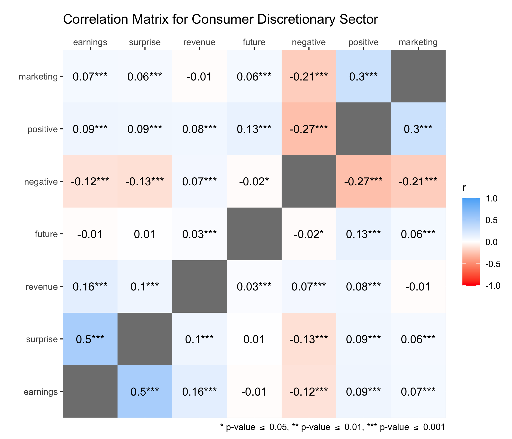
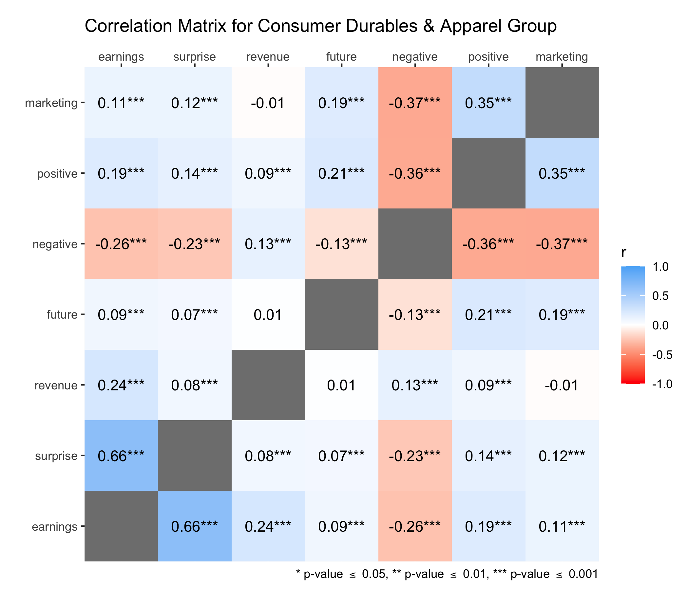

Marketing Language in Financial Earnings Calls
Marc Dotson
October 17, 2022
Objective
Use data to inform decision-making.
- Detail an (ongoing) application for text analysis.
- Discuss possible approaches to addressing the problem.
Marketing Language
Earnings calls communicate firm performance and are used to garner investor interest, but how is marketing language employed during earnings calls?
- Is marketing language used strategically to impact future firm performance?
- Is marketing used in reaction to firm performance (e.g., as a scapegoat when a company underperforms)?
How should we go about answering this question? What would the ideal data look like?
Earnings Calls
Following the release of quarterly or annual financial results, companies in the US hold earnings calls where company executives present the state of the company, including an overview of earnings.
- The report is scripted.
- Discussion section is unscripted.
- There is no required transcript format.
Q2 2015 Comcast Corp Earnings Call - Final words July 2015FD Disclosure by CQ-Roll Call, Inc. All rights reserved.: Good morning, ladies and gentlemen and welcome to Comcast’s second-quarter 2015 earnings conference call. (Operator Instructions). Please note that this conference call is being recorded. I will now turn the call over to the Senior Vice President, Investor Relations, Mr. Jason Armstrong. Please go ahead, Mr. Armstrong.ARMSTRONG, SVP OF IR, COMCAST CORPORATION: Thank you, operator and welcome, everyone. Joining me on this morning’s call are Brian Roberts, Michael Angelakis, Mike Cavanagh, Steve Burke and Neil Smit. Brian and Mike will make formal remarks and Michael, Steve and Neil will also be available for Q&A.always, let me now refer you to slide number 2, which contains our Safe Harbor disclaimer and remind you that this conference call may include forward-looking statements subject to certain risks and uncertainties.addition, in this call, we will refer to certain non-GAAP financial measures. Please refer to our 8-K for the reconciliation of non-GAAP financial measures to GAAP. With that, let me turn the call to Brian Roberts for his comments. Brian.ROBERTS, CHAIRMAN & CEO, COMCAST CORPORATION: Thanks, Jason and good morning, everyone. As this is the first call since the death of my father, I’d like to express my gratitude for the tremendous outpouring of support for me and the entire Comcast family. So many of you recalled your favorite memories and stories and for this I am beyond grateful. And as I think about today reporting on another terrific quarter, it’s such a great reflection of the special company Ralph built and I am honored to help lead.NBCUniversal has real positive momentum on many fronts and so we are pleased to report that in the second quarter we grew revenue by 11.3% and operating cash flow by 8%. Our growth was broad-based. In Cable, our investments in the customer experience, a faster X1 rollout and our leading broadband network are all paying off. We grew overall customer relationships, added broadband customers and reduced our video losses in half. In fact, this is the best second-quarter result in video that we’ve had in nine years.the highlight of the quarter was Universal Pictures and Universal Theme Parks. And overall at NBCUniversal, I just can’t say enough great things about the second quarter. Operating cash flow increased 19.4%, following up 14% growth in the first quarter. Steve Burke and his team continue to transform the business and are on track to soon double the operating cash flow since we made our original announcement with GE in 2009.
Data Wrangling
(Pretty) Big Corpus
The resulting corpus has 436 million observations from 130,531 quarterly earnings call transcripts across 5,430 companies from April 2001 to December 2020.
- Start with 178,407 transcripts.
- Extract the fiscal quarter and year from each transcript.
Fiscal Quarter and Year
Fiscal calendars differ by firm and the calendar date of a given earnings call doesn’t (necessarily) correspond to the fiscal quarter and year. Recall that there is no required transcript format.
- Filter transcripts unlikely to be quarterly earnings calls.
- Query Compustat’s Fundamentals Quarterly (2022) for quarterly revenue data and Global Industry Classification Standard (GICS).
GICS
The GICS is a hierarchical taxonomy for categorizing firms based on the good or service they provide, consisting of 11 sectors, 24 groups, 69 industries, and 158 sub-industries.
- Query the Institutional Brokers’ Estimate System (IBES) for earnings per share (EPS) and analyst forecasts.
- Difference EPS and expected EPS, which is referred to in finance as surprise (Kasznik & Lev, 1995).
- Join the corpus to the outcome variables based on company, fiscal quarter, and fiscal year.
- Filter observations without revenue, EPS, or expected EPS, thus assuming that there is no systematic reason for the absence of such data in either Compustat or IBES.
- Tokenize the corpus using a bag-of-words approach, where each token is a single word or term after converting everything to lowercase and removing punctuation.
Bag of Words
The bag-of-words approach to text analysis is like linear regression: It’s often a gross simplification, but it often gets us pretty far.
- Remove stop words using Loughran and McDonald’s (2011) generic stop words list composed for financial documents.
# Earnings Calls ----------------------------------------------------------
# Load packages.
library(tidyverse)
library(GICS) # Install using devtools::install_github("bautheac/GICS").
# Import all earning call transcripts and separate the doc_id.
transcripts <- read_rds(here::here("Data", "transcripts.rds")) |>
tibble() |>
separate(doc_id, into = c("gvkey", "call_date", "title"), sep = "_")
# Import copywrite statements to exclude from the transcripts.
copywrite <- read_rds(here::here("Data", "copywrite_statements.rds"))
# Clean and filter so we have transcripts that have the correct quarter and year.
call_data <- transcripts |>
mutate(
title = str_to_lower(title), # Make titles lowercase.
text = str_replace_all(text, "\r?\n|\r", " "), # Remove carriage returns.
first_line = str_trunc(text, 1000) |> str_to_lower() # Extract the first line.
) |>
# Filter transcripts that are unlikely to be earning calls.
anti_join(
bind_rows(
filter(transcripts, grepl("abstract|(event brief)", title)), # Filter transcripts with "abstract" or "event brief".
filter(transcripts, grepl(str_c(
"(full year)|annual", "|", # Filter transcripts with "full year", "annual" or
"preliminary|interim|fiscal", "|", # "preliminary", "interim", "fiscal" or
"(half year)|(year end)|yearend" # "half year", "year end", or "yearend"
), title), !grepl("quarter|q\\d|q\\d\\d|\\dq|\\d\\dq", title)) # but without "quarter", "q#", "q##", "#q", "##q".
),
by = c("gvkey", "call_date", "title")
) |>
# Extract the quarter from the title or the beginning of the text.
mutate(
call_date = lubridate::mdy(call_date),
quarter = str_extract(title, str_c(
"((\\w+)(?=\\squarter))", "|", # Extract word before "quarter" or
"((\\w+)(?=-quarter))", "|", # word before "-quarter" or
"((?<=quarter-\\s)(\\w+)|(\\d))", "|", # word or "#" after "quarter-" or
"((q\\d)|(q\\d\\d)|(\\dq)|(\\d\\dq))" # "q#", "q##", "#q", "##q".
)),
quarter = case_when(
str_detect(quarter, "first|1st|q1|q01|1q|01q") ~ "1",
str_detect(quarter, "second|2nd|q2|q02|2q|02q") ~ "2",
str_detect(quarter, "third|3rd|q3|q03|3q|03q") ~ "3",
str_detect(quarter, "fourth|4th|q4|q04|4q|04q") ~ "4"
),
quarter = ifelse(!is.na(quarter), quarter, str_extract(first_line, str_c(
"((\\w+)(?=\\squarter))", "|", # Extract word before "quarter" or
"((\\w+)(?=-quarter))", "|", # word before "-quarter" or
"((?<=quarter-\\s)(\\w+)|(\\d))", "|", # word or "#" after "quarter-" or
"((q\\d)|(q\\d\\d)|(\\dq)|(\\d\\dq))" # "q#", "q##", "#q", "##q".
))),
quarter = case_when(
str_detect(quarter, "1|first|1st|q1|q01|1q|01q") ~ "1",
str_detect(quarter, "2|second|2nd|q2|q02|2q|02q") ~ "2",
str_detect(quarter, "3|third|3rd|q3|q03|3q|03q") ~ "3",
str_detect(quarter, "4|fourth|4th|q4|q04|4q|04q") ~ "4"
),
# Extract the year from the title or the beginning of the text.
year = str_extract(title, str_c(
"(20\\d\\d)", "|", # Extract year "20##" or
"((?<=q\\d\\s)(\\d\\d))", "|", # "##" after "q#" or
"((?<=q\\d\\d\\s)(\\d\\d))", "|", # "##" after "q##" or
"((?<=\\dq\\s)|(?<=\\dq)(\\d\\d))", "|", # "##" after "#q" or
"((?<=\\d\\dq\\s)|(?<=\\d\\dq)(\\d\\d))", "|", # "##" after "##q" or
"((?<=')(\\d\\d))", "|", # "##" after "'" or
"((?<=fy\\s)(\\d\\d)|(?<=fy)(\\d\\d))" # "##" after "fy " or "fy".
)),
year = ifelse(!is.na(year), year, str_extract(first_line, str_c(
"(20\\d\\d)", "|", # Extract year "20##" or
"((?<=q\\d\\s)(\\d\\d))", "|", # "##" after "q#" or
"((?<=q\\d\\d\\s)(\\d\\d))", "|", # "##" after "q##" or
"((?<=\\dq\\s)|(?<=\\dq)(\\d\\d))", "|", # "##" after "#q" or
"((?<=\\d\\dq\\s)|(?<=\\d\\dq)(\\d\\d))", "|", # "##" after "##q" or
"((?<=')(\\d\\d))", "|", # "##" after "'" or
"((?<=fy\\s)(\\d\\d)|(?<=fy)(\\d\\d))" # "##" after "fy " or "fy".
))),
# Clean up quarter and year.
quarter = as.numeric(quarter),
year = str_pad(year, 3, side = c("left"), pad = "0"),
year = str_pad(year, 4, side = c("left"), pad = "2"),
year = as.numeric(year),
year = ifelse(year > 2021, NA, year),
# If there is no year, quarters 1 and 2 have a FY = calendar year - 1, otherwise use calendar year.
year = ifelse(is.na(year) & quarter %in% c(1, 2), lubridate::year(call_date) - 1, year),
year = ifelse(is.na(year) & quarter %in% c(3, 4), lubridate::year(call_date), year)
) |>
# Remove extraneous copywrite statements.
mutate(
text = str_remove_all(text, copywrite[1]),
text = str_remove_all(text, copywrite[2]),
text = str_remove_all(text, copywrite[3]),
text = str_remove_all(text, copywrite[4]),
text = str_remove_all(text, copywrite[5])
) |>
drop_na(quarter) |>
drop_na(year) |>
# Finally, ensure UTF-8 encoding for the titles and text.
mutate(
title = iconv(title, to = "UTF-8"),
text = iconv(text, to = "UTF-8")
)
call_data
# Firm Performance --------------------------------------------------------
# Create a plain text file (.txt) with one GVKEY code per line
# for pulling quarterly revenue and industry data from Computstat.
call_data |>
count(gvkey) |>
select(gvkey) |>
write_tsv(here::here("Private", "Compustat GVKEYs.txt"), col_names = FALSE)
# Import the GICS standards and rename variables to match Compustat data.
data(standards)
gics <- standards |>
rename(
gsector = `sector id`,
sector = `sector name`,
ggroup = `industry group id`,
group = `industry group name`,
gind = `industry id`,
industry = `industry name`,
gsubind = `subindustry id`,
sub_industry = `subindustry name`
)
# Import Compustat fundamentals quarterly with the following filters:
# - Consolidation Level: C
# - Industry Format: INDL
# - Data Format: STD
# - Population Source: D
# - Quarter Type: Fiscal View
# - Currency: USD
# - Company Status: Active and Inactive
firm_data <- read_csv(here::here("Data", "Compustat Fundamentals Quarterly.csv")) |>
mutate(
gvkey = str_pad(gvkey, 6, side = c("left"), pad = "0"),
name = conm,
year = fyearq,
quarter = fqtr,
revenue = revtq
) |>
# Use the GICS standards to get sector, group, industry, and sub-industry names.
left_join(select(gics, gsector, sector) |> distinct(), by = "gsector") |>
left_join(select(gics, ggroup, group) |> distinct(), by = "ggroup") |>
left_join(select(gics, gind, industry) |> distinct(), by = "gind") |>
left_join(select(gics, gsubind, sub_industry) |> distinct(), by = "gsubind") |>
select(gvkey, tic, name, year, quarter, revenue, sector, group, industry, sub_industry)
firm_data
# Expected Firm Performance -----------------------------------------------
# Import analyst forecasts from IBES (see Python code for query and link
# to Compustat data).
ibes_data <- read_csv(here::here("Data", "IBES.csv")) |>
mutate(
gvkey = str_pad(gvkey, 6, side = c("left"), pad = "0"),
year = fyearq,
quarter = fqtr,
earnings = act,
forecast = medest
) |>
select(gvkey, year, quarter, earnings, forecast, contains("sue"))
ibes_data
# Join Data ---------------------------------------------------------------
# Join the earnings calls, firm performance, and expected performance data.
call_data <- call_data |>
inner_join(firm_data, by = c("gvkey", "year", "quarter")) |>
inner_join(ibes_data, by = c("gvkey", "year", "quarter")) |>
# Drop any observations that don't have outcome data.
drop_na(revenue, earnings, forecast) |>
# Add an id and differences.
mutate(
id = row_number(),
difference = earnings - forecast
) |>
# Make year_quarter variable to arrange data chronologically by firm.
unite(year_quarter, year, quarter, remove = FALSE) |>
# Lead outcome data by firm.
group_by(gvkey) |>
arrange(year_quarter) |>
mutate(
revenue_lead = lead(revenue, order_by = year_quarter),
earnings_lead = lead(earnings, order_by = year_quarter),
difference_lead = lead(difference, order_by = year_quarter)
) |>
ungroup() |>
# Select variables in order.
select(
id, gvkey, tic, name, sector, group, industry, sub_industry,
call_date, year, quarter, revenue, earnings, forecast, difference,
contains("lead"), title, text, contains("sue")
)
call_data
# Write call data.
write_rds(call_data, here::here("Data", "call_data.rds"))
# Tokenize and Remove Stop Words ------------------------------------------
# Load packages.
library(tidyverse)
library(tidytext)
# Import call data.
call_data <- read_rds(here::here("Data", "call_data.rds")) |>
mutate(
title_text = str_c(title, text, " "), # Combine title and text.
title_text = str_replace_all(text, "[:punct:]", " ") # Strip punctuation to deal with contractions.
) |>
select(id, title_text) # Select only id and title_text to reduce memory demand.
call_data
# # Mutate can take a bit to run, so we can save it as temp_call.rds.
# # write_rds(call_data, here::here("Data", "temp_call.rds"))
# call_data <- read_rds(here::here("Data", "temp_call.rds"))
# Import L&M generic stop words (not including clmd and lmn marketing terms).
generic_stopwords <- read_rds(here::here("Data", "generic_stopwords_long.rds"))
generic_stopwords
# Tokenize call data in sets to avoid memory loss and limits.
# (If we need to revisit tokenizing, consider how to parallelize.)
num_splits <- 30
for (i in seq_along(1:num_splits)) {
# Specify the start and end rows for each of the sets.
start <- round(nrow(call_data)/num_splits * (i - 1)) + 1
end <- round(nrow(call_data)/num_splits * i)
# Name assignment is based on index variable.
tokens_name <- str_c("tokens_", i, ".rds")
# Tokenize and assign to a separate object each iteration.
tokens <- call_data |>
# Slice the data.
slice(start:end) |>
# Strip punctuation to deal with contractions.
unnest_tokens(word, title_text, strip_punct = TRUE) |>
# Clean up contractions.
mutate(
word = case_when(
word == "ll" ~ "will",
word == "ve" ~ "have",
word == "t" ~ "not",
word == "d" ~ "had",
word == "s" ~ "is",
word == "re" ~ "are",
TRUE ~ word
)
) |>
# Remove generic stop words.
anti_join(generic_stopwords) |>
# Save tokens with associated id.
write_rds(here::here("Data", tokens_name))
# Remove objects to reduce memory demand.
rm(tokens, tokens_name)
}
# Bind Data ---------------------------------------------------------------
# Remove data that no longer needs to be held in memory.
rm(call_data, generic_stopwords)
# Re-import complete call_data except for text.
call_data <- read_rds(here::here("Data", "call_data.rds")) |>
select(-text)
# Bind sliced tokenized data.
word_tokens <- NULL
for (i in 1:num_splits) {
# Recreate saved file names.
tokens_name <- str_c("tokens_", i, ".rds")
# Import saved files.
tokens <- read_rds(here::here("Data", tokens_name)) |>
group_by(id) |>
# Nesting words by id, reducing memory demand (this can always be undone with unnest()).
nest(words = c(word)) |>
# Rejoin firm data.
left_join(call_data, by = "id")
# Bind sliced data to main data frame.
word_tokens <- word_tokens |>
bind_rows(tokens)
# Remove rows from call_data that have been joined. This reduces memory demand and
# highlights any documents which might have been missed.
call_data <- call_data |> anti_join(word_tokens, by = "id")
# Delete sliced tokenized data.
unlink(here::here("Data", tokens_name))
}
# Ungroup word_tokens.
word_tokens <- word_tokens |> ungroup()
word_tokens
# Write word_tokens.
write_rds(word_tokens, here::here("Data", "word_tokens.rds"))What other cleaning and feature engineering should we consider? Why?
Marketing Dictionary
Our marketing dictionary was constructed and validated following the method outlined in Berger et al. (2020), with some slight modifications.
- Started with the Loughran and McDonald dictionary (2011), which contains 86,531 words.
- First populated using unigrams drawn from the Common Language Marketing Dictionary (CLMD).
- Words that did not occur within any of the documents in the original Loughran and McDonald (2011) dataset or did not occur among the 436 million words of our dataset were removed from the validation task.
- Three independent coders manually identifed marketing terms from the list.
- In addition, one of the researchers validated the final list.
How else could we construct and validate a marketing dictionary?
Counts and Proportions
With a bag of words and a marketing dictionary, it’s simply a matter of counting the marketing terms in each transcript.
- Similarly employed Loughran and McDonald’s (2011) sentiment dictionary to identify positive and negatively valenced terms within a financial context.
- Used the LIWC-22 Future Oriented Words dictionary (Pennebaker et al., 2022) given the role of earnings calls to sell investors on a company’s future success.
We control for variation in earnings call length relative to term use by calculating the proportion of marketing and other terms used within each earnings call.
| Variable | Definition |
|---|---|
marketing |
Proportion of marketing terms. |
positive |
Proportion of positive terms. |
negative |
Proportion of negative terms. |
future |
Proportion of future-oriented terms. |
revenue |
Reported quarterly revenue in millions of US dollars. |
surprise |
Actual quarterly EPS subtract the median forecasted quarterly EPS. |
earnings |
Quarterly EPS in US dollars. |



Key Findings
- Marketing language is associated with positive sentiment and higher firm performance.
- These relationships are stronger for consumer-focused and marketing-centric companies.
What are the limitations of this descriptive analysis?
Bayesian Statistics, Machine Learning, and Causal Inference
A hierarchical Bayesian time series with heterogeneous treatment effects.
- Include dimension reduction in the feature space and an expansion of lags across quarters.
- Account for heterogeneity by identifying meaningful groups and allowing for group-level effects.
- Address the endogeneity of strategic language.
What should we use as features in such a model?
Thank You!
github.com/marcdotson/earnings-calls